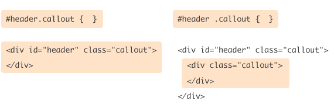

Css ID ve CLASS Seçimi
Class Kullanımı
Bir HTML kaynağına baktığınızda bir element (tag) özelliği olarak class="stil" şeklinde bir
özellik belirtildiğini görebilirsiniz.
Yukarıdaki div elementi içinde yer alan class="stil", o div elementi için CSS özellikleri belirtmemizi sağlayan bir yoldur. CSS dosyamızda şu şekilde bir ifade varsa:
.stil {
font: 10pt Tahoma, Verdana;
color: blue;
}
Nokta (.) ile başlayan bir stil oluşturduk ve adını biz verdik. Bu demektir ki class="stil" ile belirttiğimiz tüm elementler 10 punto Tahoma yazı tipinde ve mavi (blue) renginde olacaktır. Tabi istersek sadece tek bir elementte geçerli olmasını sağlayabiliriz. Örneğin sadece DIV elementlerinde geçerli olmasını istiyorsak:
div.stil {
font: 10pt Tahoma, Verdana;
color: blue;
}
".stil" yani seçim adımızın başına div getirmemiz yeterli olacaktır. Bu durumda bu CSS kodu sadece DIV elementlerinde kullanılabilir olacaktır.

CLASS özelliği kullanmanın bize sağlayacağı yararlara şöyle bir bakalım:
Kendimizin adlandırdığı özel stiller yaratmak ve kullanmak
Bir stili birden fazla elementte kullanabilmek
Stillere CSS de yer verip HTML kodlarımızı sürekli tekrarlanan uzun CSS kodlarından arındırmak
ID Kullanımı
ID özelliği ile de stiller yaratabiliriz. CLASS'tan farklı yanları: Sadece tek bir elementte kullanılabilir. Aynı id değeri iki elemente verilemez (Her id sadece tek bir elementte kullanılabilir). Stil dosyamızda CLASS'da . (nokta) kullanırdık, ancak id özelliğine göre stilleme yapacaksak # (diyez) kullanırız.
ID değeri "stil" olan bir DIV elementi görüyoruz. CSS dosyamızda bu elemente özel stil tasarlarken aşağıdaki şekilde kod yapısını oluşturmalıyız:
#stil {
font: 10pt Tahoma, Verdana;
color: blue;
} Görüldüğü gibi bu kez diyez (#) ile başlattık. Sadece tek bir elemente özel stil tasarlamış olduk (Neden? Çünkü başka bir elementte yine id değeri "stil" belirtilemez.) Ayrıca unutmadan söyleyelim hiçbir ID değeri rakamla başlamaz. ID, HTML dosyasında o elementi bulmamızı sağlar, bu nedenle aynı ismi veremeyiz. Aynı ismi vermemizin diğer yaratacağı sorun Java Script'te bu elementi id özelliğine göre kullanamamak olacaktır. Son olarak bazı tarayıcılar birden fazla aynı id kullanılan HTML dosyalarında stilleri görmezden gelebilir.